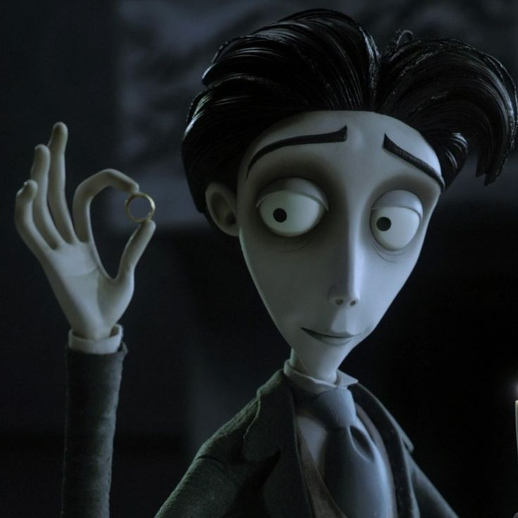
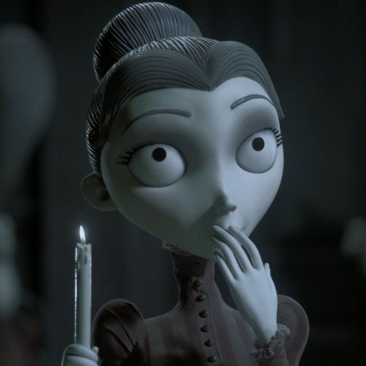

.jpg)
Emily (A Noiva-Cadáver)
Romântica, gentil, sonhadora e sensível. Busca o amor e a felicidade.
A morte a levou, mas jamais a venceu
A Noiva-Cadáver (Corpse Bride) é uma animação em stop-motion lançada em 2005, dirigida por Tim Burton e Mike Johnson. A história mistura romance, fantasia, humor sombrio e elementos góticos.
O filme acompanha Victor, um jovem que acaba se envolvendo em uma situação inesperada ao colocar uma aliança no dedo de Emily, uma noiva que pertence ao mundo dos mortos.
Romântica, gentil, sonhadora e sensível. Busca o amor e a felicidade.

Tímido, gentil, inseguro e apaixonado por música.

Inteligente, delicada, corajosa e bondosa.
.jpg)
Leal, brincalhão e companheiro. É o fiel cachorrinho de Victor, mesmo depois de morto.
A Noiva-Cadáver conta a história de Victor Van Dort, um jovem tímido que está prestes a se casar com Victoria Everglot, uma garota gentil de uma família rica. Durante um ensaio de casamento na floresta, Victor acaba colocando sua aliança no dedo de Emily, uma noiva que foi assassinada enquanto esperava pelo seu amado. Ao despertar, Emily acredita que Victor é seu novo marido e o leva para o mundo dos mortos.
Preso nesse lugar misterioso, Victor tenta encontrar uma maneira de voltar para Victoria, enquanto conhece melhor a história triste de Emily. Entre descobertas, segredos e acontecimentos inesperados, ele precisa enfrentar escolhas difíceis envolvendo o amor, a vida e a morte.
Durante a produção de A Noiva-Cadáver, os personagens eram bonecos articulados com esqueletos de metal por dentro. Para mudar suas expressões faciais, a equipe utilizava rostos e peças intercambiáveis, permitindo que cada personagem demonstrasse emoções diferentes quadro a quadro!